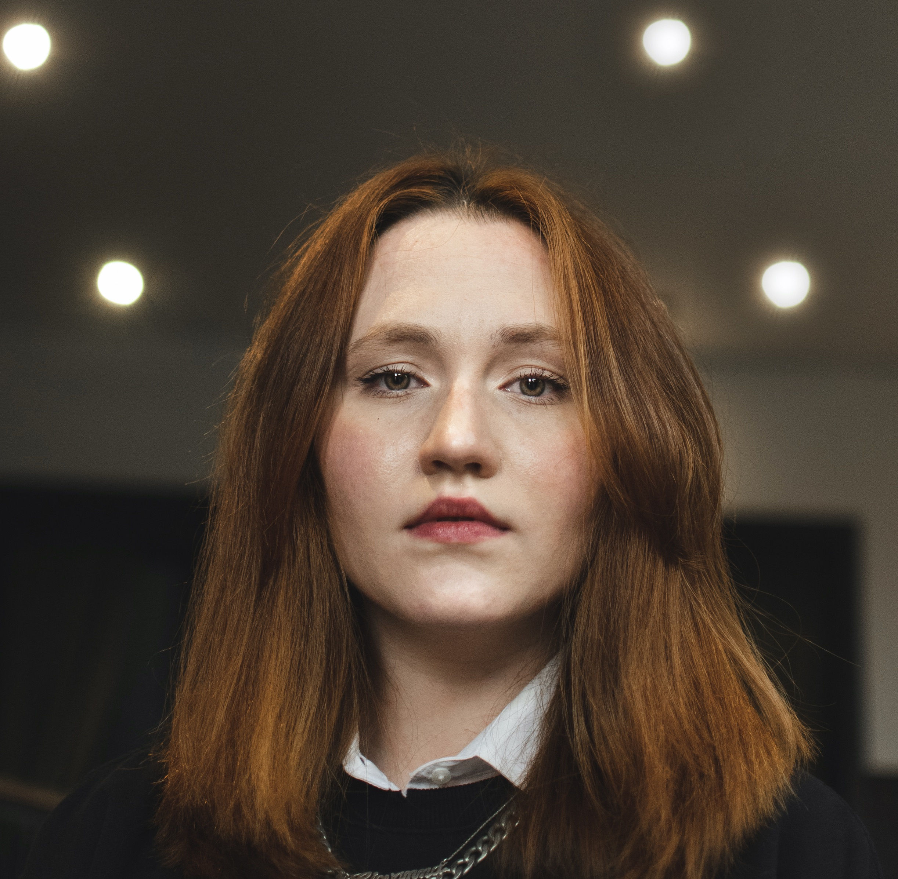

Giovanna Chirico

To contact me, click here.
Summary
Experienced, committed, and ambitious researcher and legal counsel in the field of International Environmental Law and Human Rights Law with strong communications and collaboration skills. Transiotining to a career in Web Develpment.
Education
Master’s Degree (09/2022 –09/2023)
Public International Law Master with a specialization in Oceans, the Environment and Sustainability, Utrecht University – GPA: 7,96 – Thesis: “Climate Justice in the Face of Loss and Damage: Evaluating the International Climate Change Regime's Response to Non-Economic Loss and Damage” (7,5/10), written in English under the supervision of Prof. Dr. Lucas Roorda.
Bachelor’s Degree (03/2014 – 12/2019)
Bachelor of Laws, Rio de Janeiro State University (UERJ) – GPA: 9,1 – Thesis: “Paris Agreement: United States and Brazil’s possible withdrawals and its consequences” (10/10), written in Portuguese under the supervision of Prof. Dr. Raphael Carvalho de Vasconcelos.
Honors
Bright Minds Fellowship Scholarship (09/2022)
Awarded by Utrecht University to students demonstrating outstanding academic achievement, interpersonal skills, and diverse personal background.
Professional Experience
Center for Studies and Research in International Environmental Law and Sustainable Development – NEPEDIMA/UERJ (12/2019 – 12/2023)
Rio de Janeiro State University Research Project – Rio de Janeiro/RJ
Legal Researcher
- Conducted literature review on international environmental law, human rights law and sustainable development.
- Presented and communicate findings to internal and external audiences.
- Organized and supported events, such as the I Jornadas de Sustentabilidade (I Sustainability Journeys) and Direitos Humanos, Empresas e os Objetivos do Direito Sustentável (Human Rights, Business and the Sustainable Development Objectives) in 2020 and the II Jornadas de Sustentabilidade (II Sustainability Journeys) in 2021.
- Organized and supported courses provided by the research center about International Environmental Law and Sustainable Development.
- Managed a 2-year project finalist of the UN Youth Sustainable Development Solutions Network Report (Bronze Award).
- Managed the successful application of the research center to the UN Youth Sustainable Development Solutions Network Membership Program.
Carlos Edison do Rêgo Monteiro Filho (CERM) Advogados (11/2020 – 11/2021)
Law Firm – Rio de Janeiro/RJ
Research Lawyer
- Conducted literature research on various topics of Civil Law, including Comparative Law.
- Conducted judicial decisions research on various topics of Civil Law, including Comparative Law.
- Monitored the status of judicial proceedings.
- Prepared civil procedural and administrative documents independently, mainly in the scope of Civil Law.
- Elaborated legal opinions, which demanded critical thinking and analytical skills.
- Monitored new laws and regulations for clients.
- Elaborated advisory opinions on important legal questions.
Courses
The Complete 2024 Web Development Bootcamp (06/2024 – )
Udemy
Languages
- Portuguese: Native
- English: Fluent, written and spoken – TOEFL Score: 107/120
- Dutch: Basic, written and spoken (A1/A2) – Course NT2 beginners 1+2 – UvA Talen
Hobbies
- Reading fantastic and classic literature novels.
- Cooking and learning foreign gastronomies.
- Learning how to draw